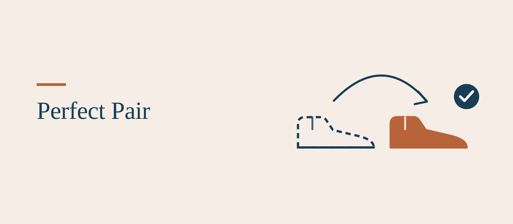
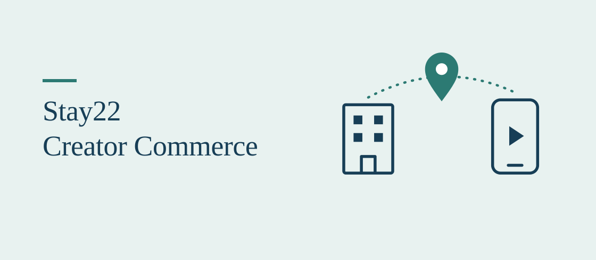
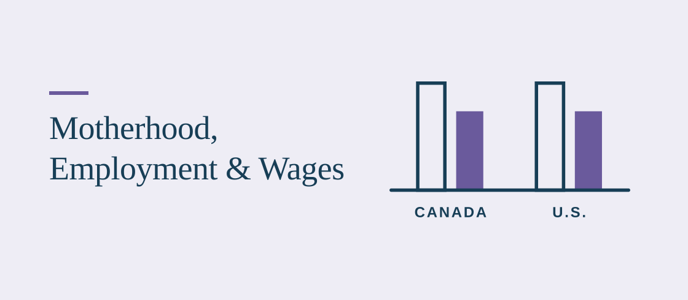

About Me
I’m curious about why people make the choices they do, and what those choices mean for businesses. When I look at data, I want to understand the context behind a pattern: what might explain it, what else could be happening, and which trade-offs matter. I enjoy working through those questions, connecting different pieces of evidence, and turning the findings into clear, practical recommendations.
Education
McGill University
Master of Management in Analytics
Queen’s University
Bachelor of Arts in Economics
National Taiwan University
International Academic Exchange
Career Interests
I’m interested in work that connects consumer and audience insights with market research, marketing analytics, business intelligence and strategy. Across industries, I hope to help businesses understand their customers, identify market opportunities, and make informed product, marketing and commercial decisions.
Skills
Programming & Analytics: Python · SQL · Stata
Visualization & Reporting: Power BI · Microsoft Excel
Analytical Methods: Regression & Statistical Analysis · Data Integration · KPI Definition · Business-Value Modeling
Business & Research: Business Intelligence · Quantitative Research · Market Analysis · Data-driven Decision Making · Client Communication
Selected Projects
A selection of projects across data analytics, business strategy and research.

Perfect Pair
As Business Value and Finance Lead, built the value model and option-scoring logic for an AI returns assistant, using ALDO data to estimate the margin kept by turning fit-related refunds into exchanges.
Read the case study →
Stay22 Creator Commerce
Co-developed a creator-marketing service connecting independent hotels with travel creators, and built its staged pilot plan with go/stop gates tied to verified bookings.
Read the case study →
Motherhood, Employment & Wages
Harmonized 960K Canada–U.S. survey records in Stata to compare employment and wage gaps between mothers and women without children, correcting wage estimates for who is in work.
Read the case studyBusiness Intelligence Developer
CN Rail – Academic Consulting Project (McGill MMA Capstone)
- Collaborating on a 5-person McGill MMA team to build a computer-vision model that automates CN Rail’s safety-asset inventory checks, aimed at replacing manual field verification.
- Own development and delivery of the team’s Power BI dashboard, the tool CN’s internal teams will use to review model results instead of inspecting each crossing.
Teaching Assistant, ECON 110/111
Queen’s University – Department of Economics
- Supported a 112-student introductory economics course, leading two weekly office hours (attendance voluntary) to explain regression analysis, review assignment problems and prepare students for exams.
- Graded 1–2 assigned questions on assignments and exams for about half of the class, giving feedback on analytical errors and problem-solving approaches.
Research and Valuation Intern
Guorongxinghua (Hubei) Assets Appraisal Co., Ltd.
- Prepared Excel DCF and asset-based valuation models, cross-checked against comparables, for 4–5 engagements in infrastructure, financial services and private equity, working from financial statements, audit reports and operating ledgers.
- Submitted models and report drafts to the team lead; they were largely adopted with minor edits into appraisal reports that investors relied on for investment and financing decisions.
- Screened 30+ companies for tax-incentive and subsidy eligibility (high-tech enterprise tax rate, VAT refunds and local industry subsidies), tracking R&D spending, revenue mix, tax and penalty records against policy criteria in Excel.
- Flagged 3 non-compliant firms in reports to government, which later denied all 3 subsidies.
Client Services and Operations Intern
China Minsheng Bank Corp., Ltd.
- Analyzed 5 corporate clients’ account flows and financial statements in Excel by fund use, idle period, withdrawal timing and risk appetite.
- Drafted needs analyses and product proposals that relationship managers used to recommend wealth products for idle cash or short-term loans for seasonal funding gaps.
- Contributed to 10+ wealth-management, insurance and loan placements by identifying client needs and building Excel return estimates for relationship managers’ proposals.
- Processed corporate clients’ account opening, document review and KYC checks in the bank’s internal system.
Audit and Accounting Intern
ShineWing Certified Public Accountants LLP
- Reviewed financial statements and related accounting records for 4 audit clients in Excel, identifying about 4–5 discrepancies.
- Reported the discrepancies to the team leader for further review, and supported tax documentation and financial reporting work.